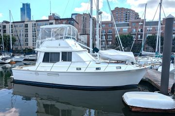

Cape Dory 36 PowerYacht Flybridge
1987–1990
The Cape Dory 36 Power Yacht is a larger twin-engine Downeast flybridge cruiser with a modified-V hull and long protective keel. A two-stateroom layout was standard, with a one-stateroom/dinette arrangement also offered, and gasoline or diesel power packages were available. Despite its traditional appearance, the 36 was designed for substantially faster operation than the displacement trawlers its styling can suggest.

- Length
- 35.75 ft
- Beam
- 13.5 ft
- Draft
- 3.5 ft
- Hull behaviour
- Planing / Modified-V
- Fuel
- Gasoline or Diesel
- Propulsion
- Shaft
- Engine configuration
- Twin Inboard
- Boat family
- Trawler
- Construction
- Fiberglass; solid bottom reported
Best for
- Couples or small families wanting a traditional two-stateroom flybridge cruiser
- Coastal and Great Lakes cruising where moderate speed is useful
- Buyers comfortable evaluating gasoline-versus-diesel power packages
Trade-offs
- Twin-engine machinery and 13-foot-6-inch beam materially increase ownership cost
- Gasoline-powered examples have different range, safety and resale considerations than diesels
- Flybridge and twin systems add maintenance complexity
- Interior volume is moderate relative to modern boats of similar beam
Known concerns
- No model-specific concern has been promoted to B-Atlas’s evidence threshold. This does not mean the model has no age-, condition- or hull-specific risks.
Inspection focus
- Confirm original gasoline or optional diesel engine package and document any repower
- Inspect hull/deck penetrations, windows and cockpit structures for moisture intrusion
- Inspect twin-engine cooling, exhaust, mounts, shafts, cutlass bearings, rudders and steering
- Inspect fuel, water and holding systems and associated hoses
- Verify one- versus two-stateroom interior arrangement
- Inspect flybridge structure, ladder, controls and actual clearance
Continue researching
Related boat models
32.83 ft · Planing / Modified-V
40 ft · Planing / Modified-V
30.25 ft · Planing / Modified-V
27.92 ft · Semi-Displacement
35.75 ft · Semi-Displacement
35.67 ft · Semi-Displacement
About this record
B-Atlas preserves uncertainty: missing information remains unknown rather than being treated as a negative. Specifications and guidance describe the model record; individual boats can differ by year, equipment, refit and condition.